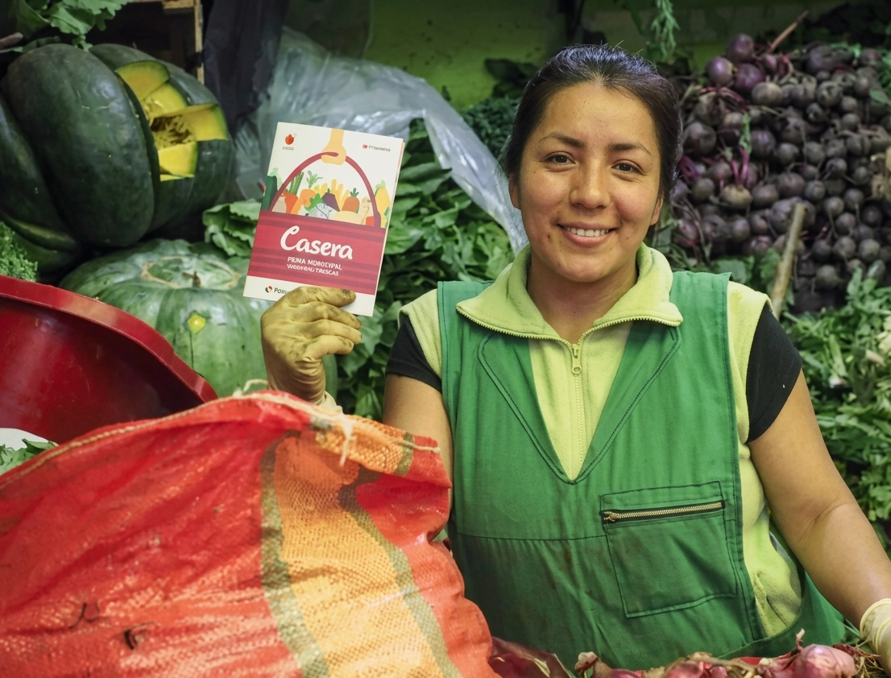
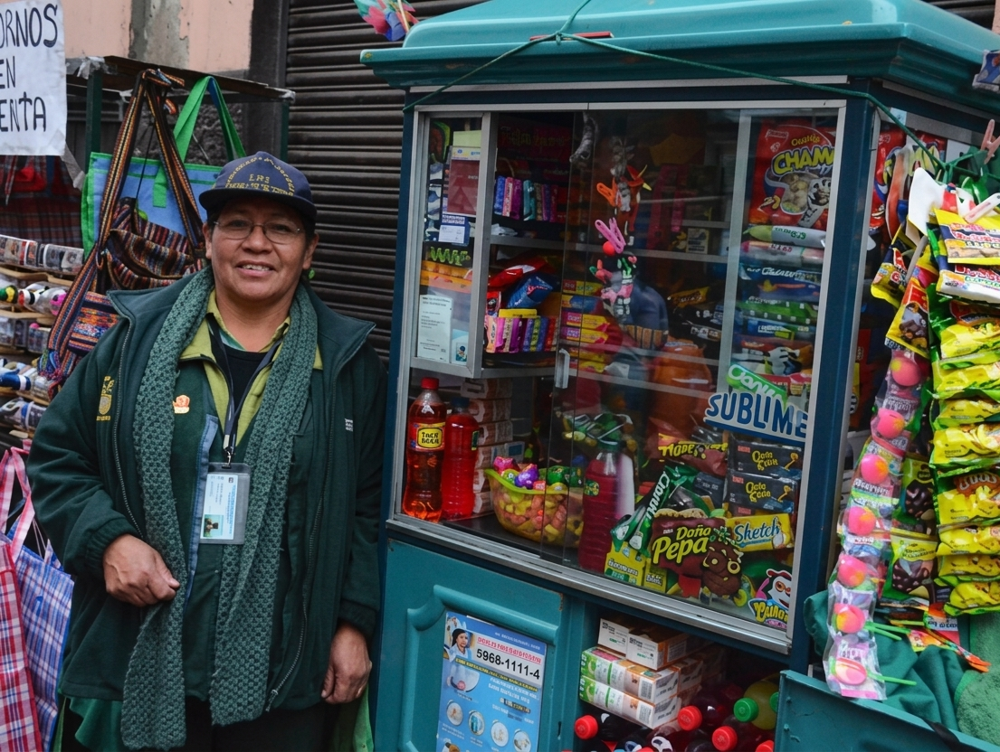
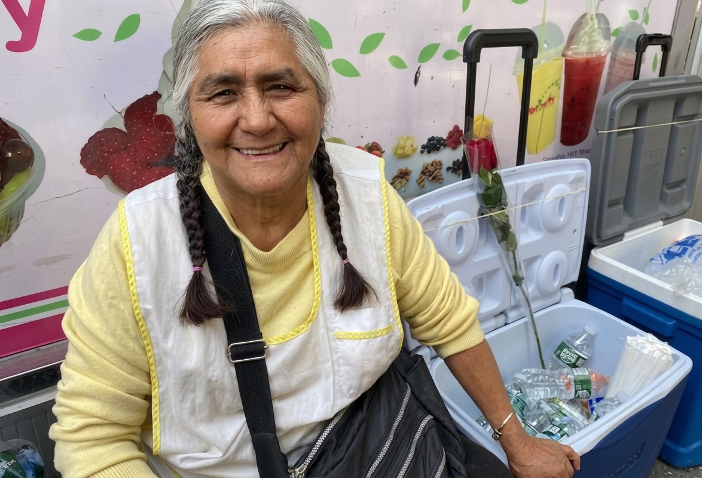
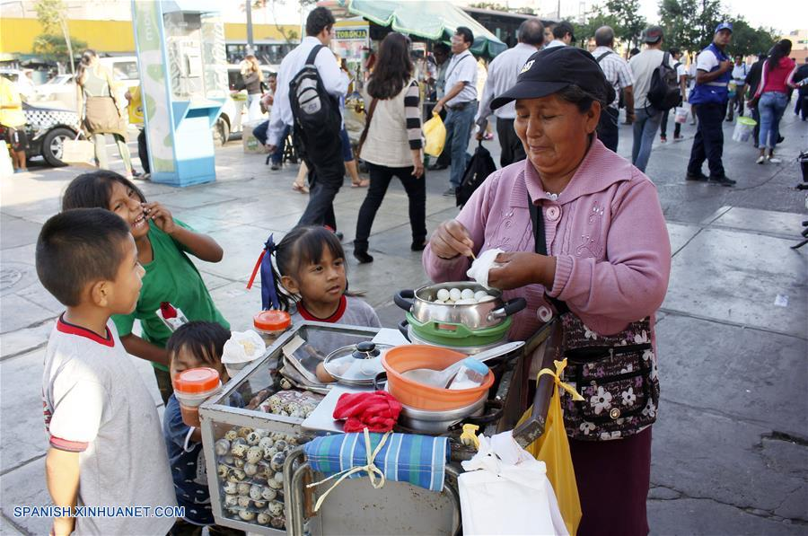
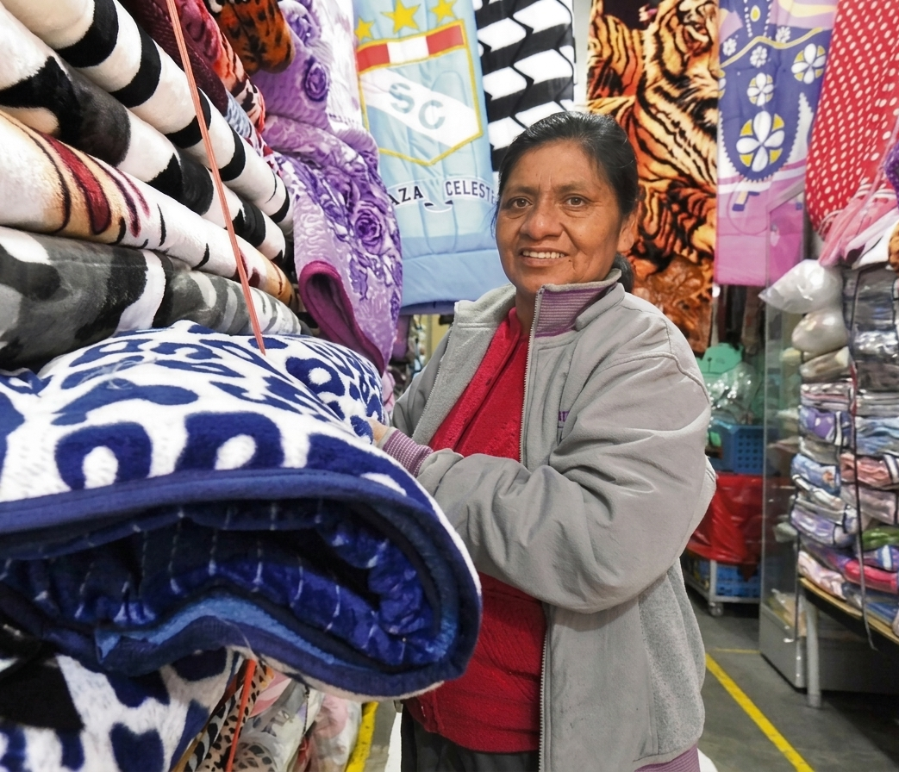
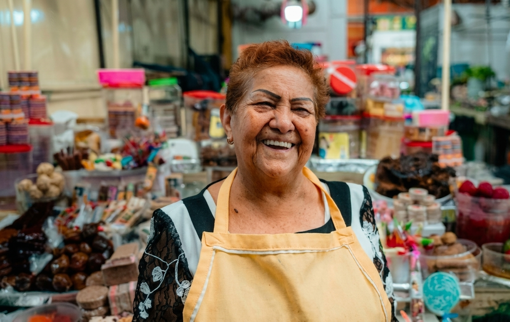
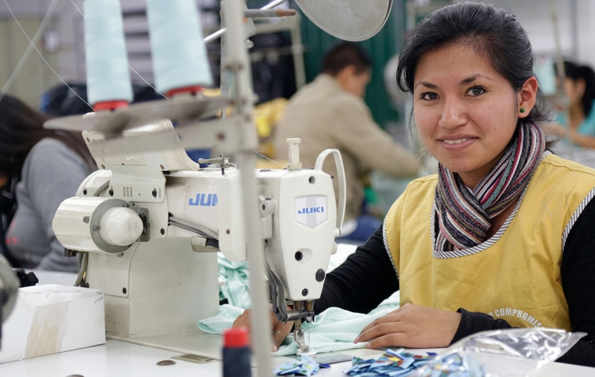

Detrás de cada bodega, cada carretilla y cada feria, hay alguien construyendo su futuro sin que el sistema lo note.







La digitalización avanza, pero el sistema tradicional tocó un tope. La mitad del país sigue sin acceso a crédito real.
Fuente: Índice de Inclusión Financiera (2021-2025)Este es el costo de la exclusión. 12 millones de peruanos no tienen otra opción ante emergencias.
70.2% de la población ocupada (12.3M) opera y produce fuera del radar bancario tradicional.
Fuente: INEICon este puntaje de 78/100, dejas de ser parte del 83% de informales sin historial y te conviertes en un candidato elegible para el crédito resiliente de TrustLink.
El dinero queda retenido en garantía hasta que la entrega se confirma. Así de simple.
El comprador paga y el dinero queda bloqueado on-chain. Nadie puede tocarlo todavía.
crearOrden()El comprador recibe el producto e ingresa un código. Eso libera el pago al vendedor al instante.
confirmarEntrega()Si el comprador no confirma a tiempo, el contrato reembolsa solo automáticamente.
liberarPorTimeout()Trusti Chatbot: "Estoy custodiando los fondos de la venta de manera segura en la Testnet de Arbitrum Sepolia. ¡Nadie puede tocarlos hasta que el cliente reciba su pedido!"
Trusti Chatbot: "El comprador ya tiene el producto en sus manos. Ingresa el código de liberación aquí abajo para autorizar el cobro instantáneo."
Trusti Chatbot: "¡Transacción completada! Tu reputación pública ha subido gracias al algoritmo descentralizado. ¡Felicidades por otra venta legítima!"
Detrás de cada venta corre un contrato inteligente sobre Arbitrum. Tú no necesitas saber qué es una "wallet" ni qué es el "gas" - para ti, se siente tan simple como mandar un Yape.
Cada venta que cierras con éxito en TrustLink construye tu Historial Verificable. Tu puntaje se actualiza al instante, creando un perfil que el banco ya no podrá ignorar.
TrustLink no es una idea de negocio: es una solución técnica que ya opera en Testnet, con un camino claro hacia el escalamiento nacional.
Lanzamiento en Lima Metropolitana y Piura con las primeras 500 microempresarias.
Crecimiento a nuevas regiones e integración del Crédito Resiliente ante emergencias climáticas.
Conectar a los 12.3 millones de informales del Perú con la banca formal.
Explora la plataforma como comprador, vendedor o administrador.
Iniciar sesión